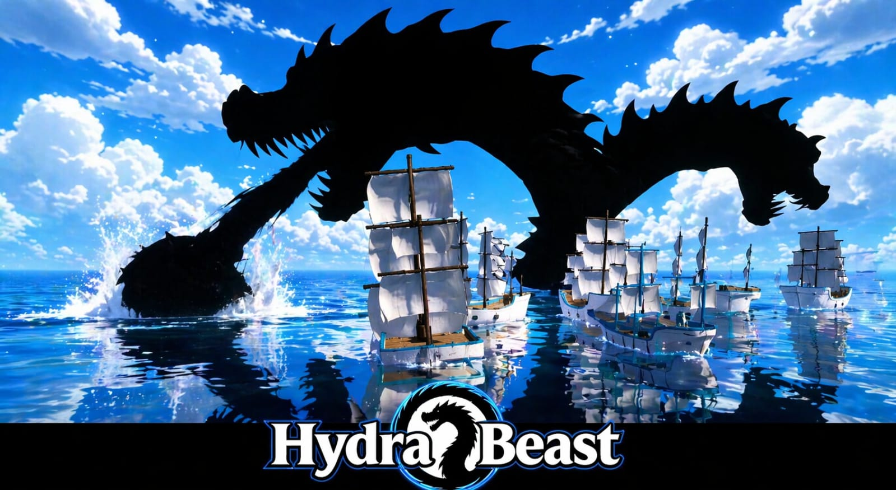
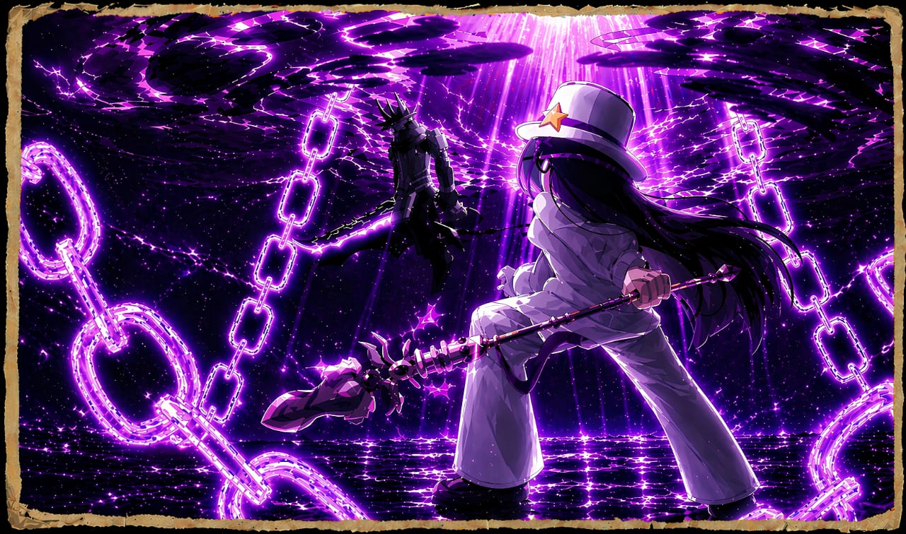

<!DOCTYPE html>
<html lang="pt-BR">
<head>
<meta charset="UTF-8">
<meta name="viewport" content="width=device-width, initial-scale=1.0">
<title>Hydra Project</title>

<style>

/* RESET */
*{
    margin:0;
    padding:0;
    box-sizing:border-box;
    font-family: Arial, sans-serif;
}

/* FUNDO */
body{
    background: url('fundo.jpg') no-repeat center center fixed;
    background-size: cover;
    color:white;
}

/* CAMADA ESCURA PRA DAR CONTRASTE */
.overlay{
    background: rgba(0,0,0,0.75);
    min-height:100vh;
    padding:40px 20px;
}

/* SEÇÕES */
.section{
    max-width:1100px;
    margin:80px auto;
}

/* TITULOS */
.title{
    text-align:center;
    font-size:60px;
    margin-bottom:30px;
    letter-spacing:3px;
    animation: glow 2s infinite alternate;
}

/* ANIMAÇÃO */
@keyframes glow{
    from{ text-shadow:0 0 10px #fff; }
    to{ text-shadow:0 0 30px #00ffff; }
}

/* IMAGENS */
.section img{
    width:100%;
    border-radius:12px;
    margin-bottom:30px;
    box-shadow:0 0 20px rgba(0,0,0,0.8);
}

/* TEXTOS */
.text{
    font-size:20px;
    line-height:1.6;
    margin-bottom:20px;
}

/* SUBTITULOS */
.subtitle{
    font-size:28px;
    margin:20px 0;
    font-weight:bold;
}

/* CORES DOS PERSONAGENS */
.mary{
    color:#ff3b3b;
    font-weight:bold;
}

.jhon{
    color:#ffe600;
    font-weight:bold;
}

.rip{
    color:#a020f0;
    text-shadow:0 0 10px #a020f0;
    font-weight:bold;
}

.fer{
    color:#d9d9d9;
    font-weight:bold;
}

.mason{
    color:gold;
    text-shadow:0 0 10px gold;
    font-weight:bold;
}

/* REDES */
.social{
    text-align:center;
    margin-top:60px;
}

.social a{
    display:inline-block;
    margin:10px;
    padding:15px 25px;
    border-radius:10px;
    text-decoration:none;
    color:white;
    background:rgba(255,255,255,0.1);
    transition:0.3s;
}

.social a:hover{
    background:cyan;
    color:black;
    box-shadow:0 0 20px cyan;
}

</style>
</head>

<body>

<div class="overlay">

<!-- ========================= -->
<!-- AQUI VAI ENTRAR PARTE 2 -->
<!-- ========================= -->

</div>

</body>
</html>                 <!-- ========================= -->
<!-- INTERROGATÓRIO -->
<!-- ========================= -->

<div class="section">

    <h1 class="title" style="color:#ff3b3b;">INTERROGATÓRIO</h1>

    

    <div class="text">

        <div class="subtitle">🇧🇷 Brasil (Português)</div>

        <p>
<span class="mary">Mary:</span> Bom dia, senhor Jhon Johnson. Sabe por que está aqui?<br><br>

<span class="jhon">Jhon:</span> Estou aqui porque fui o único sobrevivente do atentado na fábrica… e vocês querem arrancar informações de mim.<br><br>

<span class="mary">Mary:</span> Será que é só isso? Sempre respostas vazias… algumas sem sentido, outras sem emoção. Quando a Apex Global me informou que você estava vivo, fiquei impressionada. Como alguém como você sobreviveu? Só bateu a cabeça? Não foi explodido… nem despedaçado como seus colegas. São perguntas simples… mas com muito significado. Você está aqui para nos dar as informações que precisamos… e então poderá sair por aquela porta e nunca mais voltar. Então, o que me diz? Vai falar… ou prefere ver centenas de pessoas morrerem como aconteceu lá? Porque aquilo não foi só na fábrica. Está acontecendo no mundo inteiro… ilha por ilha, cidade por cidade. Mas temos uma chance… e ela está bem na minha frente.<br><br>

<span class="jhon">Jhon:</span> Pra uma mulher… você é bem irritante.<br><br>

<span class="mary">Mary:</span> Todos dizem isso. Mas eu só sigo ordens… e minha ordem é fazer você falar.<br><br>

<span class="jhon">Jhon:</span> Certo, senhorita Mary… vou te dizer uma coisa: vocês não têm chance contra aquilo. Ele é invencível. Aquilo não é humano… é uma arma… ou pior, um deus. Como Rip Indra… como Mygame. Ele não conversa… só destrói. Olhos por toda a fábrica… e depois… caos. Tentei salvar meu amigo… tentei… mas fui fraco. Não tenho haki… não tenho fruta… sou só um homem tentando sustentar minha família. Mas você não entenderia, né? Vive numa mansão, com guardas te protegendo… enquanto eu acordo todo dia me perguntando se minha filha ainda está viva.<br><br>

<span class="mary">Mary:</span> CHEGA! Acha que sou sua psicóloga? Estou aqui por informações!<br><br>

<span class="jhon">Jhon:</span> Culpa sua… e dessa empresa. Esse mundo está cheio de deuses, piratas e monstros… você não faz ideia de quantas pessoas morrem por dia.<br><br>

<span class="mary">Mary:</span> Fazemos alianças para manter a ordem. Eles querem território… nós deixamos. É melhor ver pessoas pagando… do que mortas, não acha? Você fala como se pudéssemos lutar contra um deus. Um ser que se transforma em coisas inimagináveis. Não vamos enfrentar Mygame ou Rip Indra… eles destruiriam essa ilha em segundos. Agora me diga… você está frustrado por ter perdido Lip e Esthan… ou pela sua esposa? Vai falar… ou não?<br><br>

<span class="jhon">Jhon:</span> Já estou indo embora. Podem ter armas indestrutíveis… frutas modificadas… mas não vão nem arranhar ele. O que aconteceu na fábrica foi só o começo. Boa sorte tentando parar um deus.<br><br>

<span class="mary">Mary:</span> Alô… quem fala?<br><br>

<span class="mason">Mason:</span> Conseguiu alguma coisa, Mary?<br><br>

<span class="mary">Mary:</span> Nada. Sugiro iniciar o plano B.<br><br>

<span class="mason">Mason:</span> Então quer que ele seja sequestrado? Que garota má… não fazemos isso… hahaha. Quer dizer… já foi feito. Ele está em Slandbold. Arranque as informações… nem que custe a vida da filha dele. Precisamos domesticar esse próximo deus… hahaha.<br><br>

<span class="mary">Mary:</span> Hm… cruel como sempre, chefe. Que seu pedido… se torne uma ordem.
        </p>

        <div class="subtitle">🇺🇸 United States (English)</div>

        <p>
<span class="mary">Mary:</span> Good morning, Mr. Jhon Johnson. Do you know why you’re here?<br><br>

<span class="jhon">Jhon:</span> I’m here because I was the only survivor of the factory attack… and you want to extract information from me.<br><br>

<span class="mary">Mary:</span> Is that really all? Always empty answers… some meaningless, others without emotion. When Apex Global told me you were alive, I was impressed. How does someone like you survive? Just a head injury? You weren’t blown up… nor torn apart like your coworkers. Simple questions… yet full of meaning. You are here to give us the information we need… and then you may walk out that door and never return. So, what do you say? Will you talk… or would you rather see hundreds die like before? Because it didn’t just happen at the factory. It’s happening worldwide… island by island, city by city. But we have a chance… and it’s right in front of me.<br><br>

<span class="jhon">Jhon:</span> For a woman… you’re pretty annoying.<br><br>

<span class="mary">Mary:</span> Everyone says that. But I just follow orders… and my order is to make you talk.<br><br>

<span class="jhon">Jhon:</span> Fine, Miss Mary… I’ll tell you this: you don’t stand a chance. It’s invincible. That thing isn’t human… it’s a weapon… or worse, a god. Like Rip Indra… like Mygame. It doesn’t talk… it just destroys. Eyes everywhere in the factory… and then chaos. I tried to save my friend… I tried… but I was weak. No haki… no powers… just a man trying to support his family. But you wouldn’t understand, right? Living in a mansion with guards protecting you… while I wake up every day wondering if my daughter is still alive.<br><br>

<span class="mary">Mary:</span> ENOUGH! Do you think I’m your therapist? I’m here for information!<br><br>

<span class="jhon">Jhon:</span> This is your fault… and your company’s. This world is full of gods, pirates, and monsters… you have no idea how many people die every day.<br><br>

<span class="mary">Mary:</span> We form alliances to maintain order. They want territory… we let them. Better people paying than dying, don’t you think? You speak as if we could fight a god. Something that turns into unimaginable forms. We won’t face Mygame or Rip Indra… they would destroy this island in seconds. Now tell me… are you more frustrated about losing Lip and Esthan… or your wife? Will you talk… or not?<br><br>

<span class="jhon">Jhon:</span> I’m leaving. You may have indestructible weapons… modified powers… but you won’t even scratch it. What happened at the factory was just the beginning. Good luck trying to stop a god.<br><br>

<span class="mary">Mary:</span> Hello… who is this?<br><br>

<span class="mason">Mason:</span> Did you get anything, Mary?<br><br>

<span class="mary">Mary:</span> Nothing. I suggest we initiate Plan B.<br><br>

<span class="mason">Mason:</span> So you want him kidnapped? Naughty girl… we don’t do that… hahaha. Actually… it’s already done. He’s in Slandbold. Get the information… even if it costs his daughter’s life. We need to tame this next god… hahaha.<br><br>

<span class="mary">Mary:</span> Hm… cruel as always, boss. May your request… become an order.
        </p>

    </div>

</div><!-- ========================= -->
<!-- HYDRA BEAST -->
<!-- ========================= -->

<div class="section">

    <h1 class="title" style="color:#00ffff;">HYDRA BEAST</h1>

    

    <div class="text">

        <div class="subtitle">🇧🇷 Brasil (Português)</div>

        <p>
Hydra Beast — os novos Sea Beasts híbridos (…texto mantido…)
        </p>

        <div class="subtitle">🇺🇸 United States (English)</div>

        <p>
Hydra Beast — the new hybrid Sea Beasts<br><br>

Hydra Beasts are a new generation of hybrid sea creatures capable of manipulating elements such as fire, lightning, ice, and shadows — among others still in development. The project has been in development for over five months, and for now, little information has been revealed. However, we already know this system is designed to diversify naval combat, offering unique experiences for each player.<br><br>

Each Hydra will have its own attack style: some may grab you with their jaws, others strike with their tails, or use elemental abilities to surprise players while sailing. While these mechanics may seem simple, they promise to completely transform the dynamics of the seas.<br><br>

Currently, the system is still in testing, so there is no confirmed release for this year — nor any guarantee the idea will move forward exactly as planned. But if implemented, it could mark a true evolution of the seas… making exploration far more intense, challenging, and exciting.
        </p>

    </div>

</div><!-- ========================= -->
<!-- UM DEUS FURIOSO -->
<!-- ========================= -->

<div class="section">

    <h1 class="title" style="color:#a020f0;">UM DEUS FURIOSO</h1>

    

    <div class="text">

        <div class="subtitle">🇧🇷 Brasil (Português)</div>

        <p>
(Seu texto já melhorado — mantido)
        </p>

        <div class="subtitle">🇺🇸 United States (English)</div>

        <p>
A Furious God<br><br>

Three days ago, the great pirate queen Fer crossed a line that should never have been touched. She invaded a territory that did not belong to her. She tore down the flag of the feared god Rip Indra. She stole money from the villagers — a payment meant for Indra at the end of the month.<br><br>

But she didn’t stop there. Fer destroyed historical monuments… built by the god himself.<br><br>

And so the question remains:<br>
Did you really think a god would let this go?<br><br>

At dawn today… the sky changed.<br>
A violent storm covered the central island.<br>
Thunder tore through the sky.<br>
Rain fell as if the world itself was being punished.<br><br>

And then…<br><br>

Within the dark clouds… a silhouette appeared.<br>
A purple aura pulsed around it.<br>
Eyes filled with fury shined in the darkness.<br><br>

He descended toward the island.<br><br>

At the same time… mysterious eyes appeared everywhere.<br>
Watching.<br>
Judging.<br><br>

The pirate crew woke in terror.<br>
They knew.<br>
The ruler had arrived.<br><br>

<span class="rip">Rip Indra:</span> Do you think you can invade my land… burn my flag… destroy my island… and steal what belongs to me… as if you owned everything?<br><br>

<span class="fer">Fer:</span> (smiling, defiant) You think you’re a god, don’t you, Rip Indra? But you’re just someone who believes in your own myth. All of this… is mine now. And it will remain mine… until I rule all seas.<br><br>

Silence.<br>
For a moment… the world stopped.<br><br>

Then—<br><br>

In a single blink… her entire crew was destroyed.<br>
Crushed by an invisible force.<br>
No sound.<br>
No reaction.<br><br>

<span class="fer">Fer:</span> (impressed) So this is your power… interesting. But tell me… what are these eyes watching me?<br><br>

<span class="rip">Rip Indra:</span> (cold) They… judge.<br><br>

Without warning—<br>
Rip Indra attacks.<br><br>

Fer opens a portal.<br>
But something was wrong.<br><br>

The portal… once blue… now glowed purple.<br>
She wasn’t controlling it.<br><br>

Both vanished.<br>
Consumed by the unknown dimension.<br><br>

And after that… silence.<br>
No sound.<br>
No sign.<br><br>

No one… has ever seen them again.<br><br>

What really happened inside that portal?
        </p>

    </div>

</div><!-- ========================= -->
<!-- REDES SOCIAIS / FINAL -->
<!-- ========================= -->

<div class="section social">

    <h1 class="title" style="color:gold;">SIGA NOSSAS REDES</h1>

    <p style="margin-bottom:30px; font-size:20px;">
        Fique por dentro de todas as novidades, atualizações e conteúdos exclusivos.
    </p>

    <a href="https://www.youtube.com/@GamerRobot" target="_blank">
        ▶ YouTube
    </a>

    <a href="https://www.tiktok.com/@bloxfruitsofficials" target="_blank">
        🎵 TikTok
    </a>

    <a href="https://x.com/BloxFruits" target="_blank">
        🐦 Twitter (X)
    </a>

</div>

<!-- RODAPÉ -->
<div style="text-align:center; margin-top:60px; opacity:0.7; font-size:14px;">
    © 2026 Hydra Project — Todos os direitos reservados
</div>
